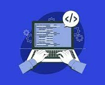

Introducción al Back-End
El Back-End gestiona la lógica de negocio, bases de datos y la comunicación entre el cliente y el servidor. Su arquitectura puede ser monolítica o de microservicios, lo que impacta en su rendimiento y escalabilidad.
Para su desarrollo, se usan lenguajes como JavaScript, Python, Java y PHP, junto con bases de datos SQL y NoSQL para almacenar información. La comunicación con el Front-End se realiza mediante APIs RESTful o GraphQL, mientras que WebSockets permiten interacción en tiempo real.
La seguridad es clave, con métodos como JWT, OAuth 2.0 y medidas contra ataques como SQL Injection y XSS. El despliegue se realiza en servidores dedicados o en la nube con herramientas CI/CD para actualizaciones eficientes.
Esta investigación explorará estos temas y su impacto en el desarrollo de software.
